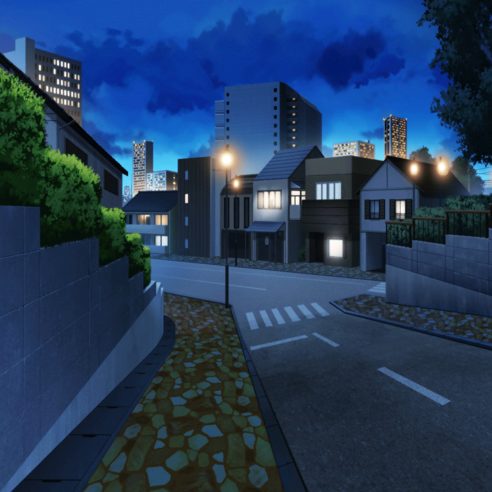

住宅街
リサ
うーん、今日は思いっきり遊んだねー。
夏休みの最後にいい思い出ができちゃったよ〜♪
リサ
ね、初めてのトコナッツパークはどうだった？
友希那
そうね、楽しくなかったわけではないけれど……
人も多かったし、少し疲れたわ
リサ
あはは、夏だしそういうテーマパークだからね。
でも、そういうところも醍醐味なんだって！
ライブだって、お客さんがたくさんいたほうが盛り上がるし
友希那
そういうものかしら……
リサ
そういうものだよ！
……それで？ みんなのこと前よりわかるようになった？
リサ
今日、みんなに質問したり感想を聞いたりしてたのって、
みんなのこともっと理解したくてしてたことなんでしょ？
友希那
……！ リサも気がついていたの？
リサ
もう何年一緒にいると思ってんの。
それくらいわかるって
リサ
あんなに質問する友希那なんて見たことなかったし。
友希那なりに、みんなのこと考えてるんだろうなーって
友希那
お互いにもっと理解しあうことが、私達に必要だと思ったのよ
リサ
あ……、それって前にRoseliaが
バラバラになりそうになったことを気にして……？
友希那
ええ、それもあるわ。
もうあんな思いはしたくないもの……
友希那
でも、それだけじゃない。
私達が高みを目指すためには大切なことだと思ったのよ。
完璧な演奏だけでは辿り着けない場所に行くには、きっと……
リサ
それで友希那なりにアクションを起こしたってことか……
友希那
ええ、今日１日、一緒に行動して、
少しだけメンバーのことを理解できた気がするわ
リサ
へぇ〜、例えばそれってどんなこと？
友希那
紗夜なら絶叫系のアトラクションが苦手だったことね。
あんな取り乱し方をするなんて思わなかったし、
知らなかった一面を知れたことになるんじゃないかしら
リサ
いやいや、あれは苦手とかってレベルじゃないよ！
アタシだってかなりヤバかったもん！
友希那
そこまででもなかった気がするけど……
他にはそうね、改めて紗夜の真面目な性格を目の当たりにしたわ
リサ
アトラクションを回るタイミングとか、
レストランの予約とか全部調べてやってくれたもんね
友希那
今日はスムーズにパークを回ることができたけれど、
紗夜がスケジュールを管理してくれなかったら大変だったもの
リサ
それは確かに言えてるかも……じゃあ、あこと燐子は？
友希那
あこはいつも通りだったけれど……
思っていた以上に元気だったわね
リサ
あはは、朝からテンション高かったよねー。
それだけみんなで遊びに行けるのが楽しみだったんじゃない？
リサ
元気いっぱいで遊んでたせいか、
帰りの電車で寝ちゃってたけど
友希那
何をするにも全力なところは、
出会った頃から変わっていないわね
リサ
うん。あ、でもその点、
燐子は前とちょっと変わった感じだったよね？
友希那
燐子は……以前と比べて自分を変えたいって意識が、
前に出るようになってきたと思うわ
友希那
今日も怖がっていたアトラクションに
勇気を出して挑んでいたもの
リサ
ウォータースライダーに乗るって燐子が言った時は驚いたね。
でも、かっこよかったな、燐子……
友希那
……こんなところかしら
友希那
とにかく、今日１日で、少しはメンバーのことを
知ることができたと思うわ
友希那
と言っても、まだ些細なことで、
深く理解したなんて、とても言えないけれど
リサ
それでいいんじゃない？
焦ることなんてないよ
友希那
そうね。小さなことでも、それを積み重ねていくことで、
やがて揺るぎないものへと成長していく……
友希那
人の繋がりも、演奏技術と変わらないのかもしれない……
大切なのは気持ちと、続けていくこと
リサ
気持ちがなきゃ行動はできないし、
続けなきゃ前にも進まないからねー
まあ、それが難しいんだけどさ
友希那
難しくてもやるのよ。
成し遂げたいことがあるのだから
リサ
……ところでアタシは？
今日一緒に遊んで、何か気がついたこととかある？
友希那
ないわ
リサ
即答！？ しかも、ないって！？
ないことはないでしょ〜？
友希那
ない
リサ
ええぇぇ……
友希那
子供の頃から一緒にいるのだもの、
今更、新しい何かを見つけるほうが難しいわ
友希那
それだけ、私はリサのことを理解しているつもりだし、
リサも同じでしょう？
リサ
それもそっか……えへへ、自分で聞いておいてなんだけど、
ハッキリそう言われると、なんだか照れちゃうね……
友希那
慌てたり照れたり、忙しいわね……あっ
友希那
今日というか、さっき気づいたことならあるわ
リサ
え？ なになに？ 教えて！
友希那
……背中に虫がついてるわよ
リサ
えっ？ 虫……って、えええぇぇぇぇぇぇっ！？
嘘ぉぉっ！？ い、いつからぁっ！？
友希那
トコナッツパークを出てからずっとよ。
みんな気がついていなかったみたいだけれど……
友希那
リサは虫が嫌いだから、驚かせないようにと、
言うタイミングを探していたの……
結局驚かせてしまったわね
リサ
反省は後で！ とにかく取って！ 取ってよぉっ！
もう、友希那ぁぁぁぁぁっ！